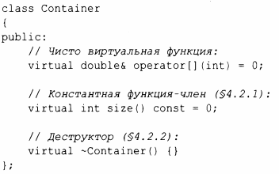
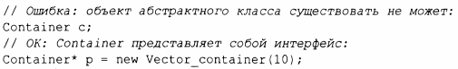
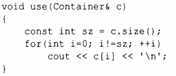
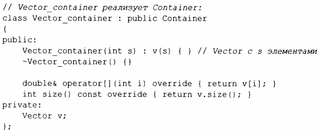
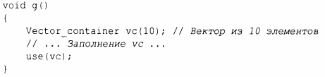
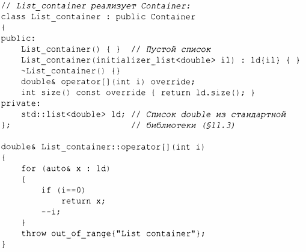
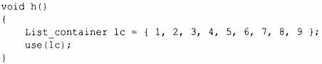

⇐4.2.3 Инициализация контейнеров 4.4 Виртуальные функции⇒
Такие типы, как complex и Vector, называются конкретными типами, потому что их представление является частью их определения. В этом они напоминают встроенные типы. В противоположность им абстрактный тип - это тип, который полностью изолирует пользователя от деталей реализации. Для этого мы отделяем интерфейс от представления и отказываемся от реальных локальных переменных. Поскольку мы ничего не знаем о представлении абстрактного типа (даже о его размере), мы должны выделить объекты в свободной памяти (§4.2.2) и получить доступ к ним через ссылки или указатели (§1.7, §13.2.1).
Сначала мы определим интерфейс класса Container, который будем разрабатывать как более абстрактную версию нашего класса Vector:
Этот класс является чистым интерфейсом для некоторых контейнеров, которые будут определены позже. Слово virtual означает "может быть переопределено позже в классе, производном от данного". Неудивительно, что объявленная как virtual функция называется виртуалыюй функцией. Класс, производный от Container, обеспечивает реализацию интерфейса Container. Любопытный синтаксис =О говорит о том, что функция является чисто виртуальной, т.е. некоторый класс, производный от Container, обязан ее определить. Таким образом, невозможно определить объект, который имеет тип просто Container. Например:
Container может служить только интерфейсом класса, который реализует функции operator [] () и size ().Класс с чисто виртуальной функцией называется абстрактным классом.
Данный Container может использоваться следующим образом:
Обратите внимание, как функция use () использует интерфейс контейнера при полном незнании деталей реализации. Она использует size () и [] без какого-либо представления о том, какой именно тип обеспечивает их реализацию. Класс, который предоставляет интерфейс для множества других классов, часто называют полиморфным типом.
Как это часто бывает у абстрактных классов, класс Container не имеет конструктора. В конце концов, у него нет никаких данных для инициализации. С другой стороны, Container имеет деструктор и этот деструктор является виртуальным, поэтому классы, производные от Container, могут обеспечить соответствующую реализацию. Это также обычное явление для абстрактных классов, потому что работа с ними, как правило, выполняется с помощью ссылок или указателей, а при уничтожении Container через указатель неизвестно, какие именно ресурсы принадлежат его реализации; см. также §4.5.
Абстрактный класс Container определяет только интерфейс (и не определяет никакой реализации). Чтобы класс Container был полезен, мы должны написать контейнер, который реализует функции, требуемые его интерфейсом. Для этого мы могли бы использовать конкретный класс Vector:
Запись : puЫic может быть прочитана как "порожден из" или "является подтипом". Класс Vector _ container называется производным от класса Container, а класс Container является базовым классом для Vector container. Альтернативная терминология называет Vector container подклассом, а Container - суперклассом. Говорят, что производный класс наследует члены из своего базового класса, поэтому использование базового и производного классов обычно называется наследованием.
Члены operator [] () и size () перекрывают (override) соответствующие элементы базового класса Container. Я явно использовал ключевое слово override, чтобы пояснить, что это было сделано преднамеренно. Использование override не является обязательным, но его применение позволяет компилятору обнаруживать ошибки, такие как опечатки в именах функций или небольшие различия между типом виртуальной функции и ее предполагаемым перекрытием. Явное использование override особенно полезно в больших высокоуровневых иерархиях, в которых в противном случае трудно понять, что должно было быть перекрыто и чем.
Деструктор -Vector container () перекрывает деструктор базового класса -Container ().Обратите внимание, что деструктор члена -Vector () неявно вызывается деструктором его класса -Vector container ().
Чтобы такая функция, как use (Container&), могла использовать Con tainer при полном незнании деталей реализации, некоторая другая функция должна создать объект, с которым она сможет работать. Например:
Поскольку use () не знает о Vector _ container, а осведомлена только об интерфейсе Container, она будет одинаково хорошо работать с различными реализациями Container. Например:
Здесь представление принимает вид класса стандартной библиотеки list <double>. В обычной ситуации я бы не реализовывал контейнер с операцией индексирования, используя список, потому что производительность индексирования списка существенно хуже по сравнению с таковой у вектора. Однако здесь я просто хотел показать реализацию, которая радикально отличается от обычной.
Функция может создавать List_container и использовать его в функции use():
Главное в том, что use (Container&) не знает, имеет ли его аргумент тип Vector container, List container или какой-либо иной вид Con tainer; ему не нужно это знать. Он может использовать любой вид Container. Он знает только интерфейс, определяемый Container. Следовательно, use (Container&) не нужно перекомпилировать, если изменяется реализация List_container или используется какой-то новый класс, производный от Container.
Оборотной стороной этой гибкости является то, что работать с такими объектами требуется только по ссылке или через указатель (§5.2, § 13.2.1 ).